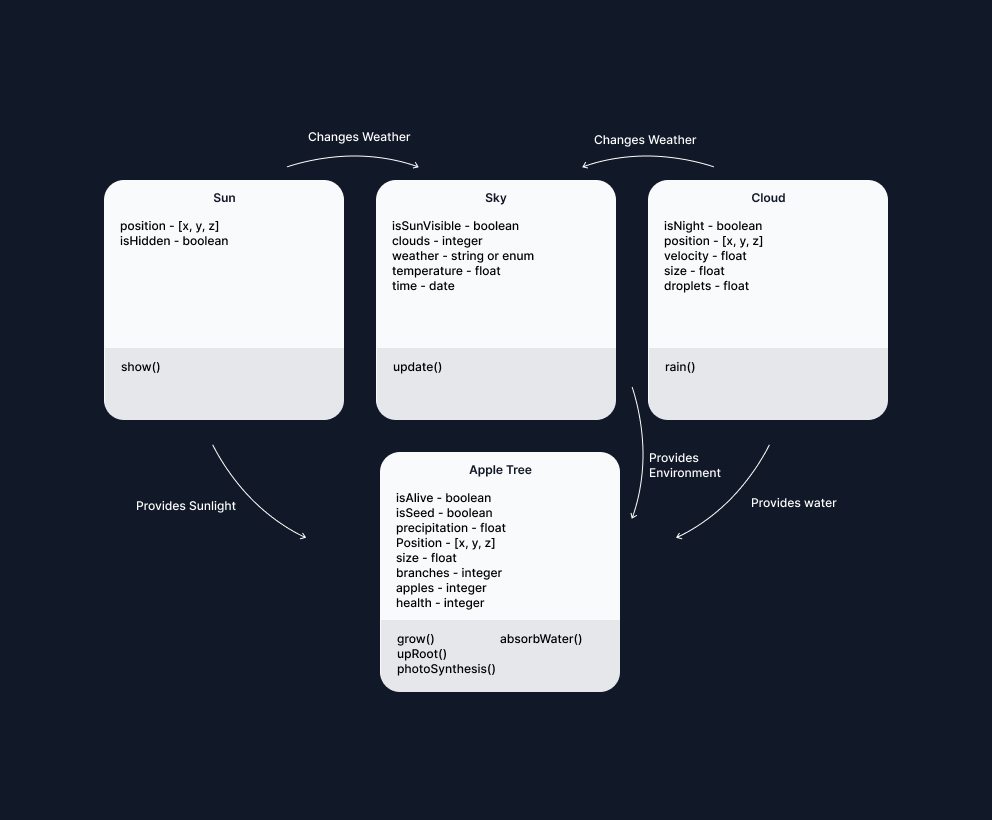

In order to have an apple tree grow in an environment, I thought of 3 essential objects that affect the tree: sun, sky, and cloud. These objects have certain functions so that apple tree will either grow or die and produce apples. As shown in a diagram below.
